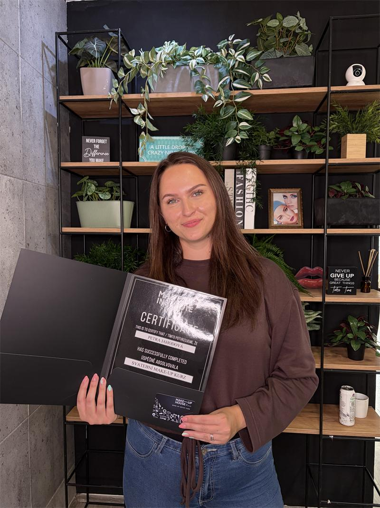
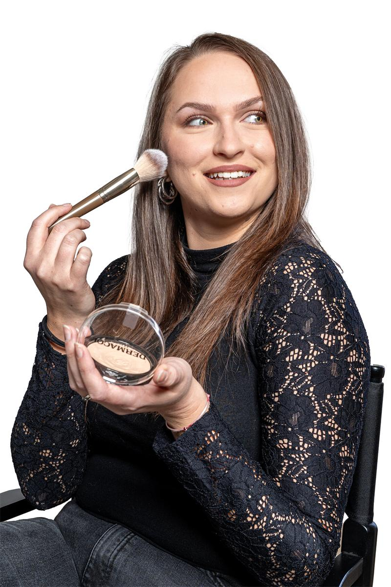

O mně
Jsem Petra
Vizážistka z Lichnova u Frenštátu pod Radhoštěm. Věřím, že nejkrásnější je přirozenost – a právě tu ti pomůžu podtrhnout.

Jak to začalo
Od maminčina make‑upu k vlastnímu salonu
Líčení mě bavilo odmala. Tajně jsem si půjčovala maminčin make‑up a zkoušela, co všechno se s ním dá udělat. Později jsem si na sobě troufala na výraznější líčení – a čím dál víc holek se mě ptalo, jestli bych nenalíčila i je.
Zájem rostl, a tak jsem se rozhodla udělat z koníčku řemeslo. V dubnu 2025 jsem absolvovala akreditovaný kurz vizážistiky a ve stejném roce jsem si odjela svou první svatební sezónu jako vizážistka.
Jsem tvořivá duše a ve 26 letech jsem začala naplno dělat to, co mě baví a naplňuje. Dnes líčím v salonu v Lichnově a ke svatbám vyjíždím po okolí.
Můj styl
Přirozenost, která ti sluší
Můj rukopis jsou žádné vrstvy ani masky. Jednotný, čistý a decentní vzhled, ve kterém zůstaneš sama sebou.
Jemně a přirozeně
Zaměřuju se na přirozenost a jemnost. Žádné těžké vrstvy, jen čistá a sjednocená pleť a decentně zvýrazněné oči nebo rty.
Neměním tě
Jen vyzdvihuju tvoje přednosti. Chci, aby ses po nalíčení cítila sebevědomě a v zrcadle viděla pořád sebe – jen krásnější.
Pro každou z vás
Bez věkové kategorie – ráda nalíčím malé holčičky i babičky. Výrazné večerní líčení na efekt u mě nehledej, jsem tu spíš pro ty, které se líčí decentně a příležitostně.
Kurzy a vzdělání
Řemeslo jsem se učila u profesionálů
Akreditovaný kurz vizážistiky
Studio Leny. Základ mého řemesla – příprava pleti, práce s barvou a světlem, denní i večerní líčení.
Kurz svatebního líčení
Make‑up Institute Prague. Svatební líčení, které vydrží celý den a krásně vypadá na fotkách.


Foto: Lucie Miková
A jaká jsem?
Se mnou nikdy není nuda
Jsem komunikativní a extrovertní, takže se u mě nebudeš ostýchat ani chvíli. Chci pro tebe tvořit autentický a příjemný prostor, kam se budeš ráda vracet – ať už na líčení před plesem, nebo na svatební zkoušku.
Rezervace
Těším se, až se poznáme osobně
Vyber si službu a termín, rezervaci ti potvrdím osobně do jednoho dne. Zdarma zrušíš den předem.